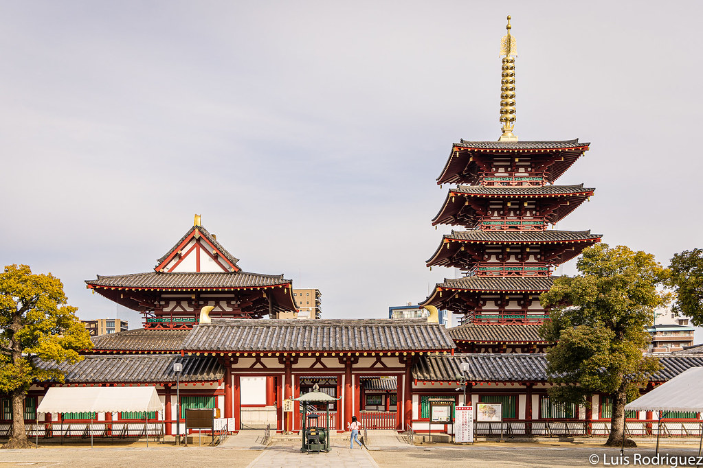
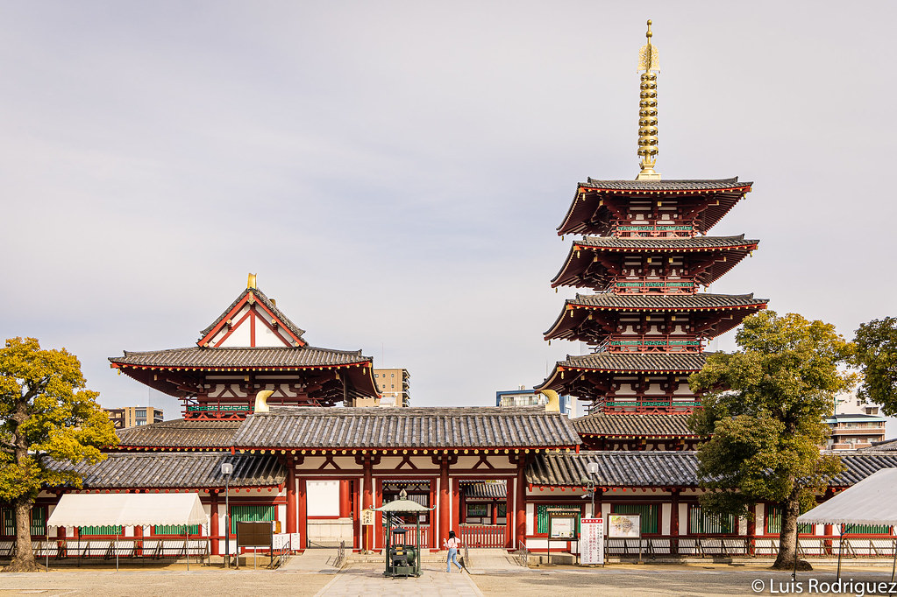
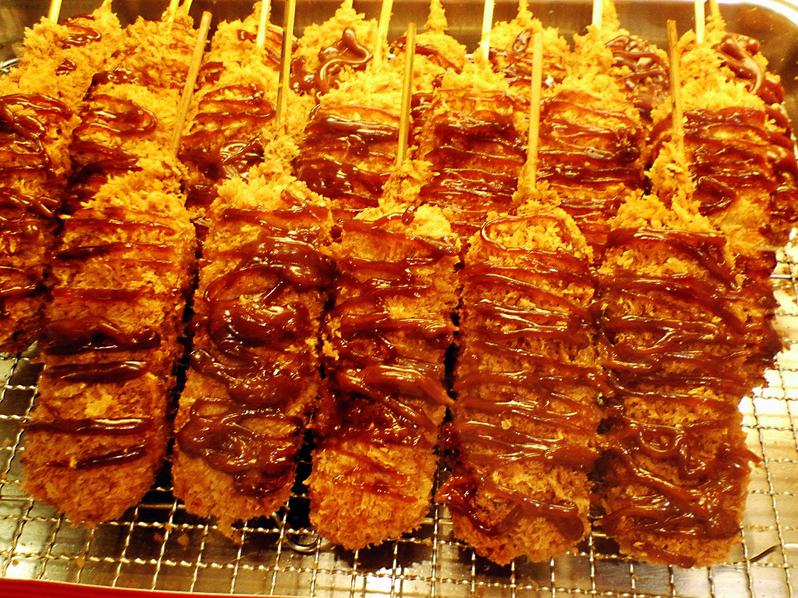
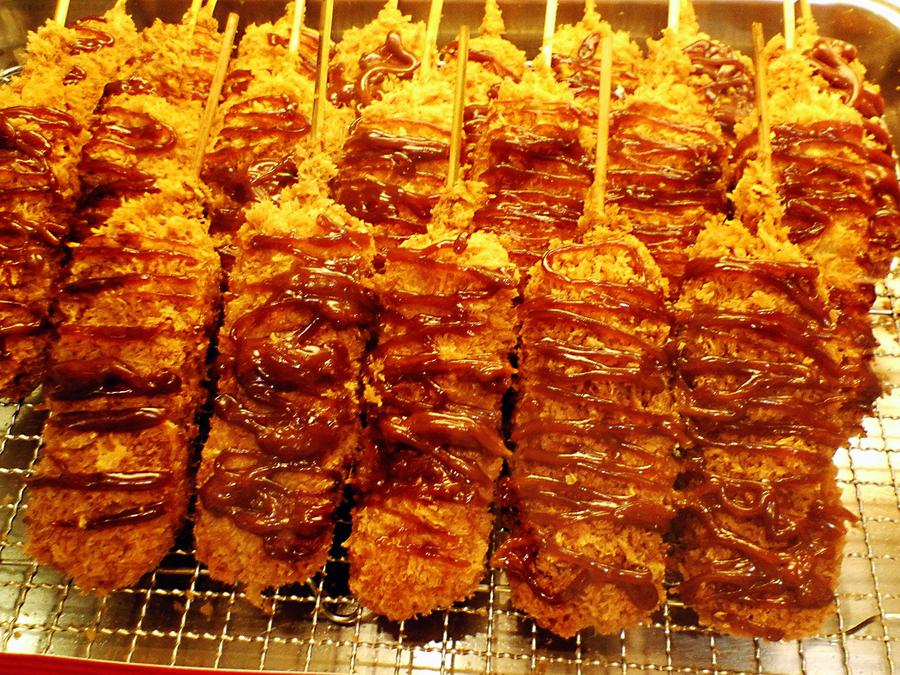

Comenzamos nuestro recorrido por Osaka con una visita al icónico Castillo de Osaka, una de las estructuras más representativas de Japón. Caminamos por el famoso distrito de Dotonbori, conocido por sus luces de neón y su animada vida nocturna, donde degustamos takoyaki y okonomiyaki, platos típicos de la región. Al día siguiente, visitamos el acuario Kaiyukan, uno de los más grandes del mundo, y el mercado Kuromon Ichiba, lleno de sabores locales. Por la noche, disfrutamos de un ambiente tradicional en un izakaya, rodeados del espíritu cálido y acogedor de los habitantes de Osaka.
Osaka es un paraíso para los amantes de las compras. Recorrimos Shinsaibashi, una de las calles comerciales más famosas de Japón, donde se encuentran tiendas de moda, tecnología y recuerdos únicos. También visitamos Namba Parks, un centro comercial al aire libre con jardines en terrazas y una arquitectura moderna que ofrece una experiencia de compra relajante.

 

La cocina de Osaka es considerada la “cocina de Japón”. Tuvimos la oportunidad de probar platos típicos como el takoyaki (bolas de pulpo), el okonomiyaki (tortilla japonesa) y los kushikatsu (brochetas fritas). La ciudad ofrece una mezcla perfecta entre tradición y modernidad gastronómica, convirtiendo cada comida en una experiencia inolvidable.
 

Nuestro viaje a Osaka con la agencia Viajes Jornada fue una experiencia maravillosa. Desde su vibrante vida urbana hasta su rica cultura gastronómica, cada rincón nos ofreció algo nuevo por descubrir. El equipo de Viajes Jornada se encargó de todos los detalles, desde la reserva del hotel hasta las recomendaciones de los mejores lugares para visitar y comer. Recomendamos Viajes Jornada a todos los que deseen vivir una experiencia inolvidable en Japón.
Calcula el costo estimado de tu estadía según la temporada, número de personas y duración del viaje.